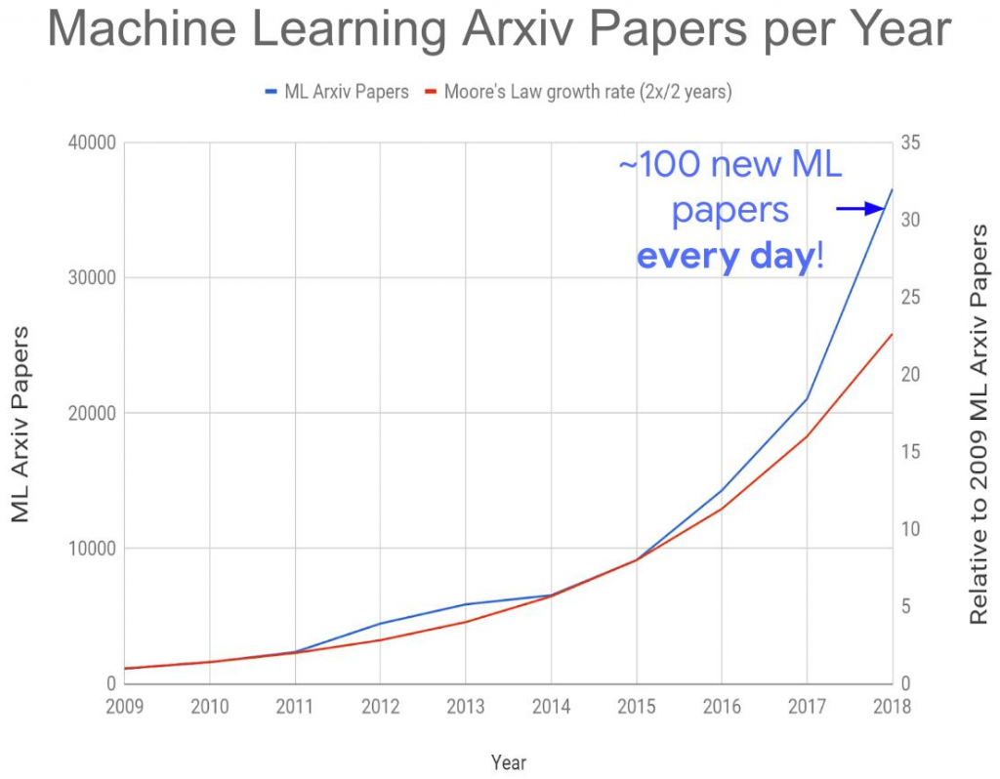
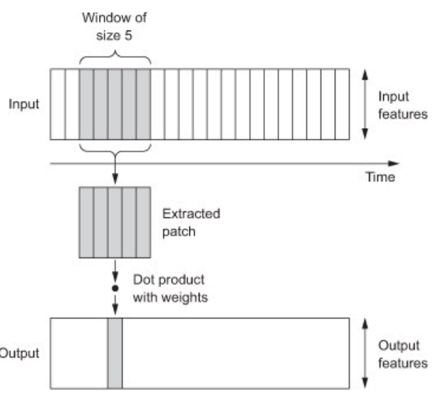
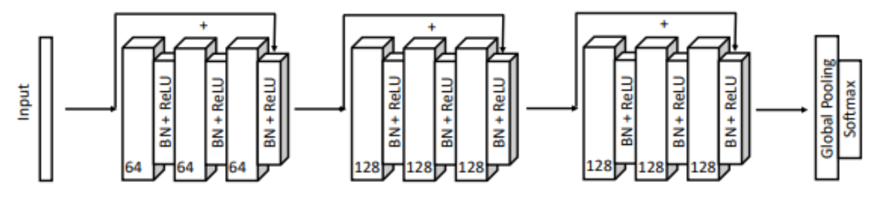
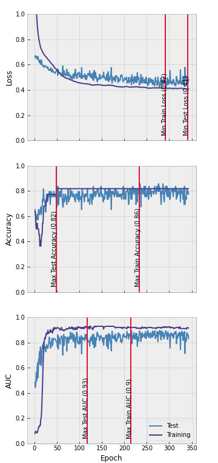
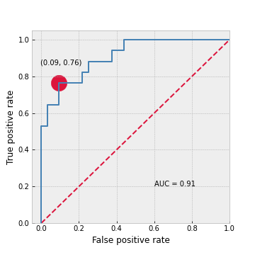
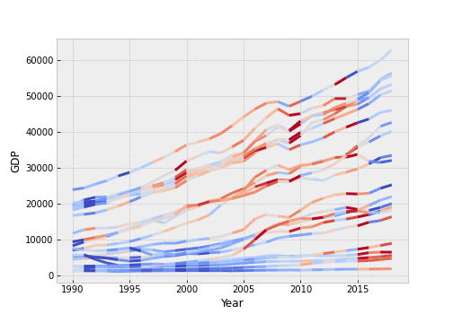

Explainable convolutional neural networks for time series classification
Data science is a rapidly evolving field. Daily, academics at universities work on the next big algorithm that will help make our lives easier. Large corporations, such as Microsoft and Amazon, have even made in-house research part of their competitive advantage by founding their own institutes covering research in areas ranging from economics and health to human-computer interaction and machine learning. Meta, previously Facebook, recently opened up access to a 175-billion-parameter language model that can be used for answering reading comprehension questions or generating new text. And Google is handing out grants of up to $100,000 to help battle climate change in a data-driven way.
It comes as no surprise that new machine learning research is therefore published at an increasingly faster rate. ArXiv, a popular public repository for research papers, even registered about 100 machine learning papers being published each day in 2018 (Figure 1). Looking at the exponential growth below, that should be plenty more in 2022.

While not all research is directly applicable to an industry context and techniques are not always mature enough to warrant implementation, impactful papers appear almost daily. It’s up to us, the data scientists, to track them down.
In this article, we discuss one of those papers that recently caught our attention. In what follows, we take you along our journey of better understanding how the algorithm works, how to implement it and what it teaches us. More specifically, this article implements the ResNet, a type of convolutional neural network, and applies it to predicting which countries won a medal at the 2022 Winter Olympics. We achieve good performance and, using explainable AI tools, are able to pinpoint why exactly our model performs the way it does.
Deep learning for time series classification
Problems in industry are plentiful but often involve some type of binary classification. Will this patient develop cancer? Is this email spam or ham? Will this customer purchase another product? Whether these questions can be answered frequently depends on the type of data available. In the past, companies were often only able to provide data from one point in time. Yet as information systems have become more mature, companies are keeping track of ever-growing amounts of data and are increasingly able to provide data over multiple time periods. They track machine behaviour over time, customer purchases or even employee happiness and want to predict whether a machine will fail, a customer will churn or an employee will leave.
Techniques that are able to make accurate classifications, using these individual level time series as input, are therefore valuable for industry. In this regard, a (fairly) recent review paper (Ismail Fawaz et al. 2019) caught our attention. As the field of time series classification has gained more traction over the years, a myriad of algorithms has been developed to solve the same problem. Through extensive testing, these authors are able to single out which perform best and under which circumstances. Among them is the residual network (ResNet), a convolutional neural network originally used for image classification.
How it works: Convolutional Neural Networks 101
At its core, a residual network (ResNet) is a convolutional neural network (CNN). These types of neural networks have already been successfully implemented in image recognition and natural language processing. While this branch of neural networks is therefore most well-known for separating cats from dogs or summarising reviews on TripAdvisor, it also has its applications to time series classification.
The CNN gets its strength from repeatedly sliding a ‘filter’ over a time series (Figure 2), taking some weighted average of the values in its range, and thereby producing a new time series. Different filters will extract different features (such as trends) and applying a filter to an already filtered time series allows for detection of even the best hidden signals. The weights for each of the observations in a filter is determined by training the CNN. They are optimized for classification of the time series at hand.

The Residual Network
The residual network (ResNet) is a special type of CNN that differs in its architecture (or sequence of layers; Figure 3). While we have done our research on the latter, the ResNet requires special attention as it contains some modifications. More specifically, a residual network Wang, Yan, and Oates (2017) contains three blocks of each three convolutional layers (Figure 3). The first block contains three layers of 64 filters, the last two blocks contain 128 filters per layer. After each block of three convolutional layers, the input to that block (i.e., the raw data or the output of the previous block) is added to the output of the third layer, using a so-called ‘shortcut connection’. In addition, after each convolutional layer, batch normalisation is executed. In the last convolutional layer of each block, the input from the shortcut connection is also batch normalised independently before being added. Lastly, after each layer, each of the elements is subjected to a ReLU activation function before being passed on to the next layer.

After three blocks of convolutional layers, the output of the third block is put through a global average pooling (GAP) layer: Each time series is averaged and can now be represented by a single node. In a final stage, each of these nodes is fully connected to the output layer, i.e., the nodes with the class indication. A sigmoid activation function allows for the prediction of a probability for belonging to each of the classes.
How to implement it: Application to the 2022 Olympic Winter Games
Now that we’ve seen the theoretical basis behind the ResNet, it’s time for an application! While many machine learning models are implemented in well-known Python libraries, the ResNet for time series classification is not. No need to panic! We will not have to optimise our loss functions by hand, we can just rely on a deep learning framework, such as TensorFlow or PyTorch. To get a feel for the power of the ResNet, we will now try to predict whether a country has won a medal at the Olympic Winter Games in 2022 just by looking at their GDP from 1990 to 2018. The code behind our results can be found on GitHub. For now, we will just focus on the results and what they mean. This section is somewhat technical, you can skip it if you want and just move on to the interpretation of the results.
The data we use was collected from the web (https://olympics.com/en/olympic-games/beijing-2022/medals and https://www.kaggle.com/datasets/nitishabharathi/gdp-per-capita-all-countries) and put into files that can easily be read by Python. We only include countries that participated in the 2022 Olympic Winter Games. In addition, the ResNet requires full time series without missing values. For the purpose of this example, we therefore choose to delete 18 cases with missing values (although there might be better strategies to deal with the missingness). Our data now consists of 71 countries, 50 of which will be used to train the model. The remaining 21 make up the test set, i.e., the unseen observations on which our final model will be evaluated.
The model we built matches the architecture from Figure 3 exactly. Yet however good it may be, without some sense-making it remains a black box. Let’s first start by inspecting its performance. Throughout the epochs (i.e., passes through the entire data set), the model should become better at matching the data. Figure 4 shows that both the training and test loss decline throughout the epochs. After about 350 epochs, our training stops since training loss has not decreased for several epochs. We also plot the test loss, yet do not make decisions based on this quantity. As expected, the test loss is always slightly higher than the training loss. Both training and test accuracy rapidly rise after the first 50 epochs and then remain almost constant at 80-85%. The AUC follows a similar pattern and remains constant at around 0.9. Overall, the model performs well. Since the accuracy of a classification problem is highly dependent on the chosen threshold, we choose our best model based on the training AUC. This is maximal around 210 epochs.

For the best model, we subsequently plot the ROC curve (Figure 5). With an AUC of 0.91 it performs significantly better than a random guess (which would have an AUC of 0.5). We choose the best threshold as the point on the curve that is closest to the upper left corner in terms of Euclidean distance, where the true positive rate is 1 and the false positive rate is 0. This point is indicated with a red dot. At this point, if we classify a country as a medal winner only if its predicted probability is above 0.54, we are able to achieve a false positive rate of 0.09 and a true positive rate of 0.76.

What it means: Explaining the previous paragraph
The discussion above was very technical and still does not give us much insight into the power of the ResNet. The model we chose, based on the results from the training set, will only classify a country as a medal winner if the predicted probability it wins one is larger than 54%. To present an unbiased estimate of this model’s performance, we calculate some statistics on the test set. Our model achieves an overall precision of about 85% and a recall of about 87%. This means that 85% of all predicted medal winners will actually win one and we correctly predict 87% of all true medal winners. Given that our model only uses GDP data (ending three years before the 2022 Olympic Winter Games), this is a rather good performance!
Yet you might be wondering how we can achieve such good performance with the data at hand. As with many deep learning models, our model remains a black box. To find out what features of the time series add to its prediction, we can use a class activation map. This tool allows us to determine the importance of each temporal element for the classification of the time series. Our class activation map (Figure 6) shows the importance of the GDP in each year for the probability of that country being a medal winner. It shows that especially periods of high growth contribute to a higher probability of winning a medal at the 2022 Winter Olympics. Intuitively this makes sense: Wealthier countries have more funds to invest in the development of athletic capabilities and are therefore more likely to win a medal.

Conclusion
Data science is an evolving field and as a data scientists we have to stay in the loop with regards to its latest innovations. This article gives some insight into that process. From researching the foundations of the ResNet to building the neural network and interpreting its results. By presenting the ResNets good performance and interpretable results, we hope to have convinced you of the potential of neural networks for the classification of time series. Happy programming!